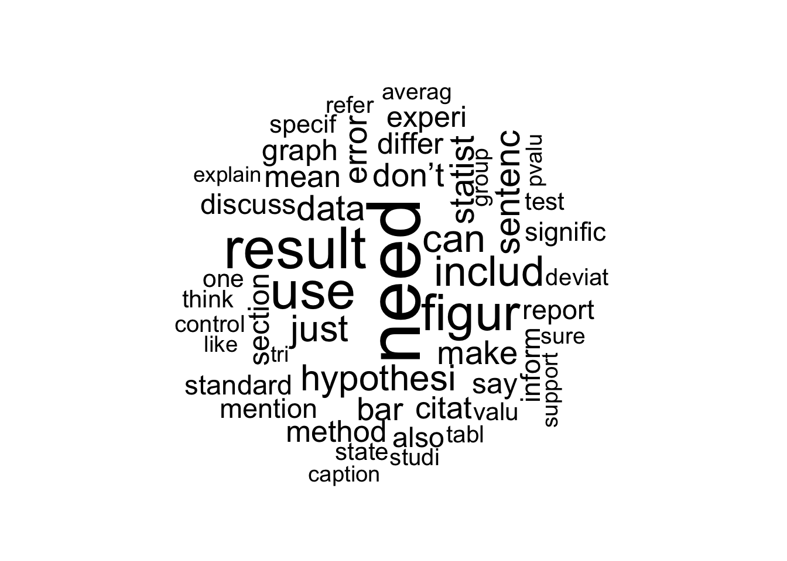
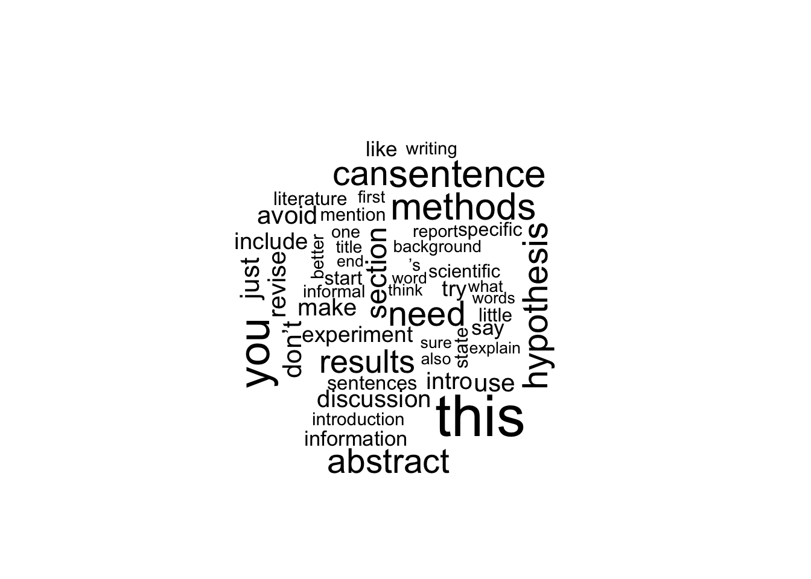
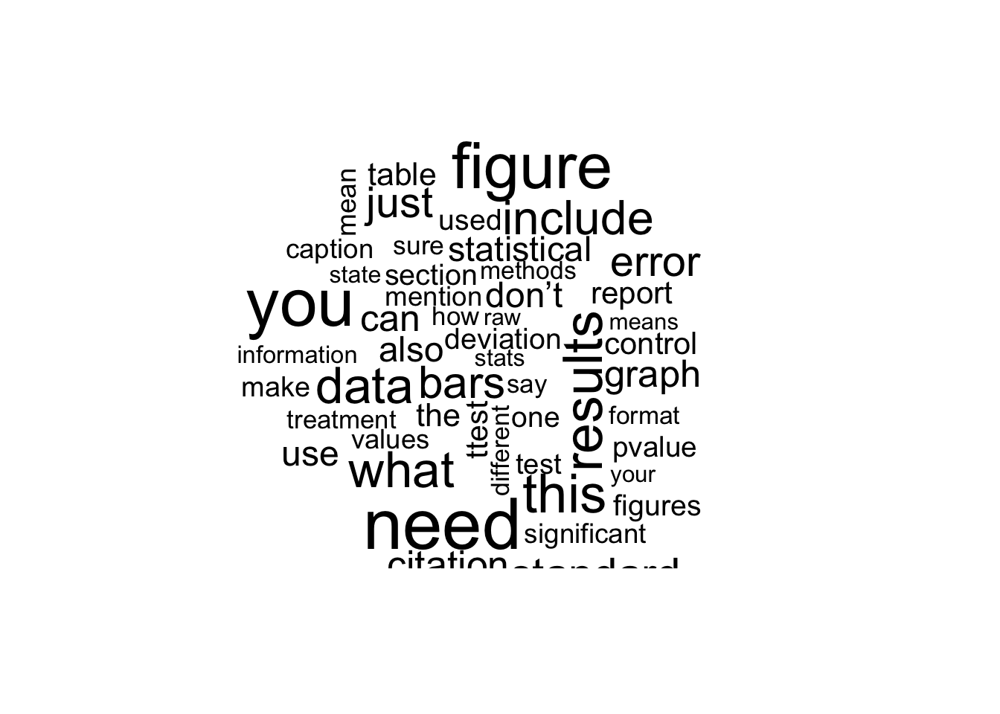
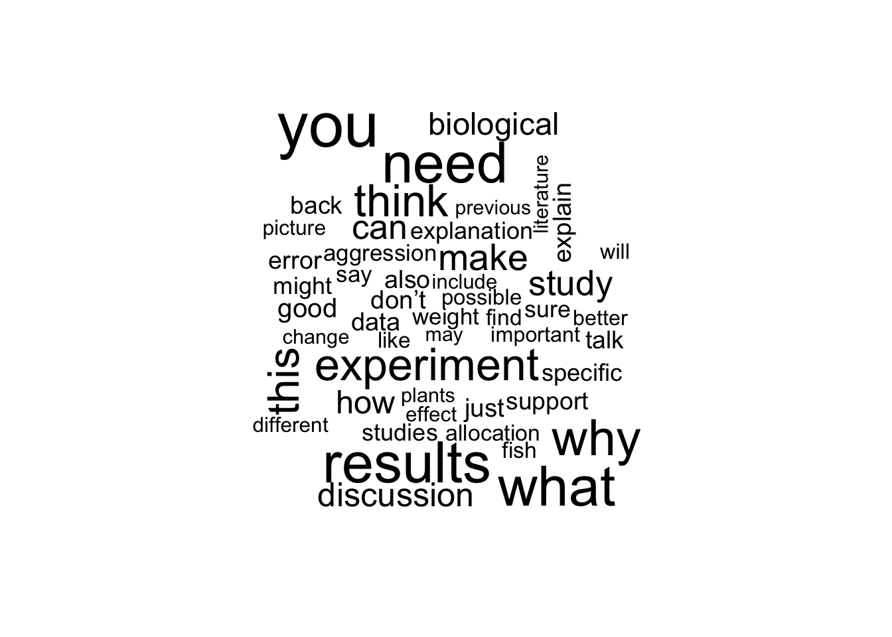
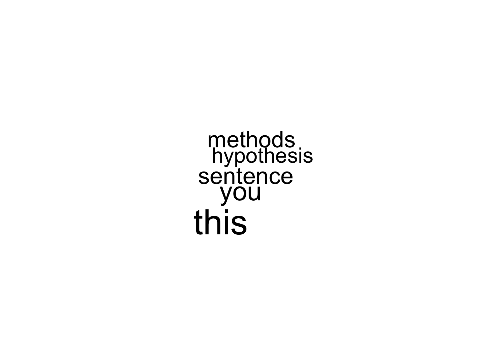
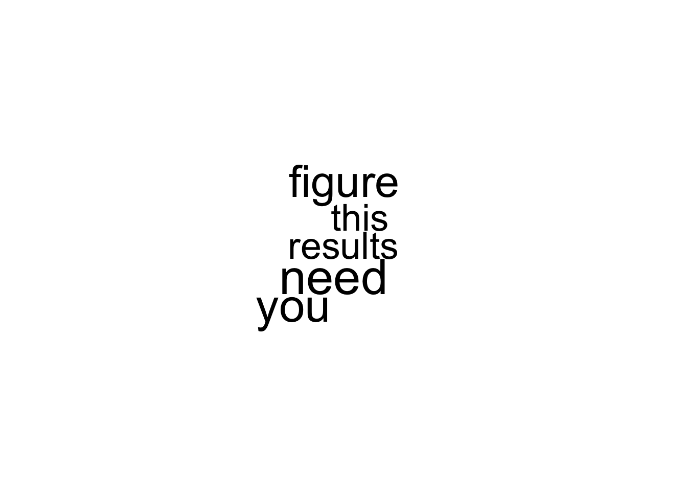
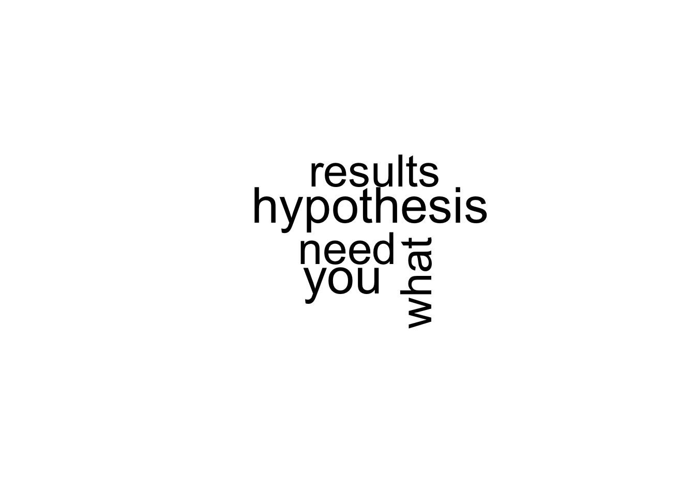

I copied the original demo web site https://rpubs.com/Billyhansen6/318412 to show how the process should work. I then duplicated the code and modified it to test with my TA comments.
The initial trial was able to identify sub-categories of comments ~80% of the time. This is better than the inter-rater reliability of two human raters, but still low. For subsequent iterations of the NB method I plan to evaluate:
The objective of this project is to classify SMS messages as spam or ham (not spam). A Naive Bayes classifier approach will be used. This example is taken from chapter 4 of Machine Learning with R, Second Edition"
An example of the conditional probability that will be computed is as follows:
\[P(Spam|Hospital) = P(Hospital|Spam)P(Spam)/P(Hospital)\]
which is the formula for determining the probability that a message is spam given that it contains the word “Hospital” in the message.
library(tidyverse)## ── Attaching packages ───────────────────────────────────────────────────────── tidyverse 1.2.1 ──## ✔ ggplot2 2.2.1 ✔ purrr 0.2.4
## ✔ tibble 1.4.2 ✔ dplyr 0.7.4
## ✔ tidyr 0.8.0 ✔ stringr 1.3.0
## ✔ readr 1.1.1 ✔ forcats 0.3.0## ── Conflicts ──────────────────────────────────────────────────────────── tidyverse_conflicts() ──
## ✖ dplyr::filter() masks stats::filter()
## ✖ dplyr::lag() masks stats::lag()library(tidytext)
library(dplyr)
library(tidyr)
library(ggplot2)
library(scales)##
## Attaching package: 'scales'## The following object is masked from 'package:purrr':
##
## discard## The following object is masked from 'package:readr':
##
## col_factorlibrary(tm)## Loading required package: NLP##
## Attaching package: 'NLP'## The following object is masked from 'package:ggplot2':
##
## annotatelibrary(SnowballC)
library(wordcloud)## Loading required package: RColorBrewerlibrary(e1071)
library(gmodels)
library(readr)
#Demo dataset of SMS messages
#sms_raw <- read.table("~/Dropbox/Coding_Tools/R_Environment/R_Projects/default_website/data/SMSSpamCollection.txt", header = FALSE, sep = "\t", quote = "", col.names = c("type","text"), stringsAsFactors = FALSE)This block reads full CSV into a starting dataframe named “base_data”. Next block isolates tables and rows into new dataframe “sms_raw2”, and renames the columns.
#library(tm)
#library(SnowballC)
#library(wordcloud)
#library(e1071)
#library(gmodels)
#library(readr)
#Read in CSV file named "coded_full_comments_dataset_Spring18anon.csv".
base_data <- read_csv(file='data/coded_full_comments_dataset_Spring18anon.csv')## Parsed with column specification:
## cols(
## .default = col_character(),
## sort = col_integer(),
## course = col_integer(),
## Rank = col_integer()
## )## See spec(...) for full column specifications.#Isolate rows to compare, reduce larger dataframe to 2 required columns of data, and put columns in order needed. Finally, rename the columns and check data format.
frequency_writing <- filter(base_data, code.subject=="2. Writing Quality"|code.subject=="3. Technical and Scientific"|code.subject=="4. Logic and Thinking")
sms_raw2 <- frequency_writing %>% select(23,22)
names(sms_raw2)[1] <- "type"
names(sms_raw2)[2] <- "text"
str(sms_raw2)## Classes 'tbl_df', 'tbl' and 'data.frame': 9129 obs. of 2 variables:
## $ type: chr "3. Technical and Scientific" "2. Writing Quality" "3. Technical and Scientific" "3. Technical and Scientific" ...
## $ text: chr "critical level?" "Hypothesis comes before methods" "Is this the most concise way to communicate no significant difference?" "Try to use more parentheticals e.g. (t = , p = , df = ) etc." ...
## - attr(*, "spec")=List of 2
## ..$ cols :List of 28
## .. ..$ unique.record : list()
## .. .. ..- attr(*, "class")= chr "collector_character" "collector"
## .. ..$ report.id : list()
## .. .. ..- attr(*, "class")= chr "collector_character" "collector"
## .. ..$ sort : list()
## .. .. ..- attr(*, "class")= chr "collector_integer" "collector"
## .. ..$ report.title : list()
## .. .. ..- attr(*, "class")= chr "collector_character" "collector"
## .. ..$ student : list()
## .. .. ..- attr(*, "class")= chr "collector_character" "collector"
## .. ..$ course : list()
## .. .. ..- attr(*, "class")= chr "collector_integer" "collector"
## .. ..$ ta : list()
## .. .. ..- attr(*, "class")= chr "collector_character" "collector"
## .. ..$ lab : list()
## .. .. ..- attr(*, "class")= chr "collector_character" "collector"
## .. ..$ tag : list()
## .. .. ..- attr(*, "class")= chr "collector_character" "collector"
## .. ..$ type.TA : list()
## .. .. ..- attr(*, "class")= chr "collector_character" "collector"
## .. ..$ grade.TA : list()
## .. .. ..- attr(*, "class")= chr "collector_character" "collector"
## .. ..$ grading.time : list()
## .. .. ..- attr(*, "class")= chr "collector_character" "collector"
## .. ..$ Rank : list()
## .. .. ..- attr(*, "class")= chr "collector_integer" "collector"
## .. ..$ hypothesis.ok : list()
## .. .. ..- attr(*, "class")= chr "collector_character" "collector"
## .. ..$ data.ok : list()
## .. .. ..- attr(*, "class")= chr "collector_character" "collector"
## .. ..$ citation.ok : list()
## .. .. ..- attr(*, "class")= chr "collector_character" "collector"
## .. ..$ interpretation.ok : list()
## .. .. ..- attr(*, "class")= chr "collector_character" "collector"
## .. ..$ organization.ok : list()
## .. .. ..- attr(*, "class")= chr "collector_character" "collector"
## .. ..$ techflaws.ok : list()
## .. .. ..- attr(*, "class")= chr "collector_character" "collector"
## .. ..$ writing.ok : list()
## .. .. ..- attr(*, "class")= chr "collector_character" "collector"
## .. ..$ comments.incorporated: list()
## .. .. ..- attr(*, "class")= chr "collector_character" "collector"
## .. ..$ ta.comment : list()
## .. .. ..- attr(*, "class")= chr "collector_character" "collector"
## .. ..$ code.subject : list()
## .. .. ..- attr(*, "class")= chr "collector_character" "collector"
## .. ..$ code.structure : list()
## .. .. ..- attr(*, "class")= chr "collector_character" "collector"
## .. ..$ code.locus : list()
## .. .. ..- attr(*, "class")= chr "collector_character" "collector"
## .. ..$ code.scope : list()
## .. .. ..- attr(*, "class")= chr "collector_character" "collector"
## .. ..$ code.tone : list()
## .. .. ..- attr(*, "class")= chr "collector_character" "collector"
## .. ..$ code.notes : list()
## .. .. ..- attr(*, "class")= chr "collector_character" "collector"
## ..$ default: list()
## .. ..- attr(*, "class")= chr "collector_guess" "collector"
## ..- attr(*, "class")= chr "col_spec"The “type”" element should be a character. It needs to be changed to a factor for analysis.
sms_raw2$type <- factor(sms_raw2$type)
str(sms_raw2$type)## Factor w/ 3 levels "2. Writing Quality",..: 2 1 2 2 2 2 3 3 3 2 ...table(sms_raw2$type)##
## 2. Writing Quality 3. Technical and Scientific
## 2578 5409
## 4. Logic and Thinking
## 1142This begins with using “tm” package in R to create a volitile coprus that contains the “text” vector from our data frame.
#library(tm)
sms_corpus2 <- VCorpus(VectorSource(sms_raw2$text))
print(sms_corpus2)## <<VCorpus>>
## Metadata: corpus specific: 0, document level (indexed): 0
## Content: documents: 9129Check out the first few messages in the new corpus, which is basically a list that can be manipulated with list operations.
inspect(sms_corpus2[1:3])## <<VCorpus>>
## Metadata: corpus specific: 0, document level (indexed): 0
## Content: documents: 3
##
## [[1]]
## <<PlainTextDocument>>
## Metadata: 7
## Content: chars: 15
##
## [[2]]
## <<PlainTextDocument>>
## Metadata: 7
## Content: chars: 31
##
## [[3]]
## <<PlainTextDocument>>
## Metadata: 7
## Content: chars: 70Use “as.character” function to see what a message looks like.
as.character(sms_corpus2[[3]])## [1] "Is this the most concise way to communicate no significant difference?"In order to standardize the messages, the data set must be tranformed to all lower case letters. The words “Free”, “free”, and “FREE” should all be treated as the same word. Use the “tm_map”" funtion in R, and use the “content_transformer” function to transform the text.
sms_corpus_clean2 <- tm_map(sms_corpus2, content_transformer(tolower))Look at third message again to see if our data was transformed.
as.character(sms_corpus2[[3]])## [1] "Is this the most concise way to communicate no significant difference?"as.character((sms_corpus_clean2[[3]]))## [1] "is this the most concise way to communicate no significant difference?"This removes numbers. May not want to do.
sms_corpus_clean2 <- tm_map(sms_corpus_clean2, removeNumbers)Stopword removal takes out words that appear often but don’t contribute to our objective. These words include “to”, “and”, “but” and “or”. One of variables to test out.
sms_corpus_clean2 <- tm_map(sms_corpus_clean2, removeWords, stopwords())Remove punctuation as well using the “removePunctuation” function. Try not doing this.
sms_corpus_clean2 <- tm_map(sms_corpus_clean2, removePunctuation)
as.character((sms_corpus_clean2[[3]]))## [1] " concise way communicate significant difference"Perform “stemming” to the text data to strip the suffix from words. Try NOT doing this.
#library(SnowballC)
sms_corpus_clean2 <- tm_map(sms_corpus_clean2, stemDocument)And now the final step in text mining is to remove white space from the document.
sms_corpus_clean2 <- tm_map(sms_corpus_clean2, stripWhitespace)as.character(sms_corpus_clean2[[3]])## [1] "concis way communic signific differ"Perform tokenization using the “DocumentTermMatrix” function. This creates a matrix in which the rows indicate documents (SMS messages in this case) and the columns indicate words. It should be noted that the “DocumentTermMaxtrix” function has the power to do all of the text mining above in one command.
sms_dtm2 <- DocumentTermMatrix(sms_corpus_clean2)Split our data into training and testing sets, so that after Naive Bayes spam filter algorithm is built it can be applied to unseen data. Divide our data set into 75% training and 25% testing.
.75 * 9129## [1] 6846.75.25 * 9129## [1] 2282.25This code assumes comments are random. Probably want to try randomizing them.
sms_dtm_train2 <- sms_dtm2[1:6846, ]
sms_dtm_test2 <- sms_dtm2[6847:9129, ]Save vectors labeling rows in the training and testing vectors
sms_train_labels2 <- sms_raw2[1:6846, ]$type
sms_test_labels2 <- sms_raw2[6847:9129,]$typeMake sure that the proportion of each sub-category is similar in the training and testing data set.
prop.table(table(sms_train_labels2))## sms_train_labels2
## 2. Writing Quality 3. Technical and Scientific
## 0.2854221 0.5911481
## 4. Logic and Thinking
## 0.1234297prop.table(table(sms_test_labels2))## sms_test_labels2
## 2. Writing Quality 3. Technical and Scientific
## 0.2733246 0.5965834
## 4. Logic and Thinking
## 0.1300920Create a wordcloud of the frequency of the words in the dataset using the package “wordcloud”.
#library(wordcloud)
wordcloud(sms_corpus_clean2, max.words = 50, random.order = FALSE)
Compare wordclouds between 3 groups.
TWO <- subset(sms_raw2, type == "2. Writing Quality")
THREE <- subset(sms_raw2, type == "3. Technical and Scientific")
FOUR <- subset(sms_raw2, type == "4. Logic and Thinking")
wordcloud(TWO$text, max.words = 50, scale = c(3, 0.5))## Warning in tm_map.SimpleCorpus(corpus, tm::removePunctuation):
## transformation drops documents## Warning in tm_map.SimpleCorpus(corpus, function(x) tm::removeWords(x,
## tm::stopwords())): transformation drops documents
wordcloud(THREE$text, max.words = 50, scale = c(3, 0.5))## Warning in tm_map.SimpleCorpus(corpus, tm::removePunctuation):
## transformation drops documents
## Warning in tm_map.SimpleCorpus(corpus, tm::removePunctuation):
## transformation drops documents
wordcloud(FOUR$text, max.words = 50, scale = c(3, 0.5))## Warning in tm_map.SimpleCorpus(corpus, tm::removePunctuation):
## transformation drops documents
## Warning in tm_map.SimpleCorpus(corpus, tm::removePunctuation):
## transformation drops documents
Remove words from the matrix that appear less than 5 times.
sms_freq_words2 <- findFreqTerms(sms_dtm_train2, 5)
str(sms_freq_words2)## chr [1:1034] "’ll" "’re" "’ve" "“correct”" "“figur" "“group" ...Limit our Document Term Matrix to only include words in the sms_freq_vector. We want all the rows, but we want to limit the column to these words in the frequency vector.
sms_dtm_freq_train2 <- sms_dtm_train2[ , sms_freq_words2]
sms_dtm_freq_test2 <- sms_dtm_test2[ , sms_freq_words2]The naive bayes classifier works with categorical features, so we need to convert the matrix to “yes” and “no” categorical variables. To do this we’ll build a convert_counts function and apply it to our data.
convert_counts2 <- function(x) {
x <- ifelse(x > 0, "Yes", "No")
}This replaces values greater than 0 with yes, and values not greater than 0 with no. Let’s apply it to our data.
sms_train2 <- apply(sms_dtm_freq_train2, MARGIN = 2, convert_counts2)
sms_test2 <- apply(sms_dtm_freq_test2, MARGIN = 2, convert_counts2)The resulting matrixes will be character type, with cells indicating “yes” or “no” if the word represented by the column appears in the message represented by the row.
Use the e1071 package to implement Naive Bayes algorithm on the data, and predict whether a message is likely to be in group TWO, THREE, or FOUR. Evaluate the prediction with the actual data using a crosstable from the gmodels package.
#library(e1071)
#library(gmodels)
sms_classifier2 <- naiveBayes(sms_train2, sms_train_labels2)
sms_test_pred2 <- predict(sms_classifier2, sms_test2)
CrossTable(sms_test_pred2, sms_test_labels2, prop.chisq = FALSE, prop.t = FALSE, dnn = c('predicted', 'actual'))##
##
## Cell Contents
## |-------------------------|
## | N |
## | N / Row Total |
## | N / Col Total |
## |-------------------------|
##
##
## Total Observations in Table: 2283
##
##
## | actual
## predicted | 2. Writing Quality | 3. Technical and Scientific | 4. Logic and Thinking | Row Total |
## ----------------------------|-----------------------------|-----------------------------|-----------------------------|-----------------------------|
## 2. Writing Quality | 457 | 104 | 63 | 624 |
## | 0.732 | 0.167 | 0.101 | 0.273 |
## | 0.732 | 0.076 | 0.212 | |
## ----------------------------|-----------------------------|-----------------------------|-----------------------------|-----------------------------|
## 3. Technical and Scientific | 108 | 1198 | 43 | 1349 |
## | 0.080 | 0.888 | 0.032 | 0.591 |
## | 0.173 | 0.880 | 0.145 | |
## ----------------------------|-----------------------------|-----------------------------|-----------------------------|-----------------------------|
## 4. Logic and Thinking | 59 | 60 | 191 | 310 |
## | 0.190 | 0.194 | 0.616 | 0.136 |
## | 0.095 | 0.044 | 0.643 | |
## ----------------------------|-----------------------------|-----------------------------|-----------------------------|-----------------------------|
## Column Total | 624 | 1362 | 297 | 2283 |
## | 0.273 | 0.597 | 0.130 | |
## ----------------------------|-----------------------------|-----------------------------|-----------------------------|-----------------------------|
##
## Show the 5 most frequent words in the data:
sack2 <- TermDocumentMatrix(sms_corpus_clean2)
pack2 <- as.matrix(sack2)
snack2 <- sort(rowSums(pack2), decreasing = TRUE)
hack2 <- data.frame(word = names(snack2), freq=snack2)
head(hack2, 5)And the 5 most frequent words from each class:
wordcloud(TWO$text, max.words = 5, scale = c(3, 0.5))## Warning in tm_map.SimpleCorpus(corpus, tm::removePunctuation):
## transformation drops documents## Warning in tm_map.SimpleCorpus(corpus, function(x) tm::removeWords(x,
## tm::stopwords())): transformation drops documents
wordcloud(THREE$text, max.words = 5, scale = c(3, 0.5))## Warning in tm_map.SimpleCorpus(corpus, tm::removePunctuation):
## transformation drops documents
## Warning in tm_map.SimpleCorpus(corpus, tm::removePunctuation):
## transformation drops documents
wordcloud(FOUR$text, max.words = 5, scale = c(3, 0.5))## Warning in tm_map.SimpleCorpus(corpus, tm::removePunctuation):
## transformation drops documents
## Warning in tm_map.SimpleCorpus(corpus, tm::removePunctuation):
## transformation drops documents
Copyright © 2018 A. Daniel Johnson. All rights reserved.